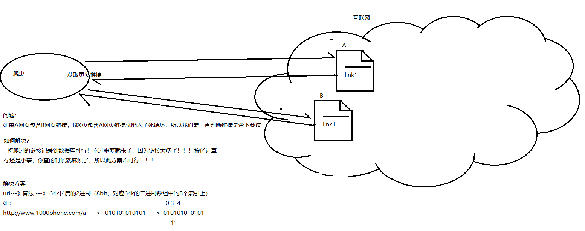
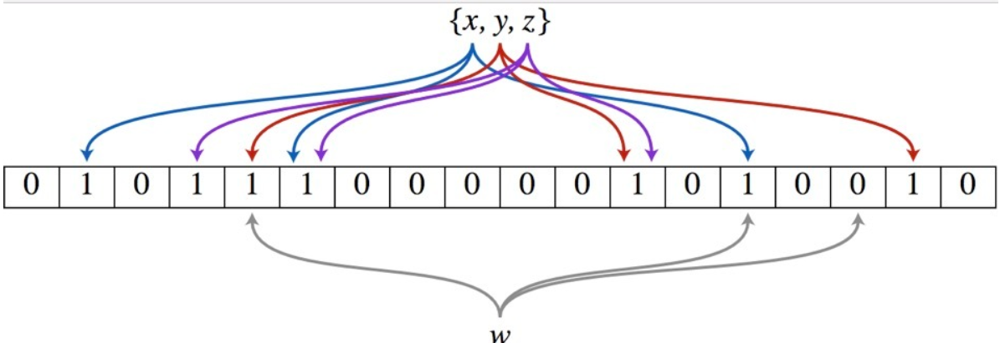

布隆过滤器由来
Bloom filter 是由 Howard Bloom 在 1970 年提出的二进制向量数据结构，它具有很好的空间和时间效率，被用来检测一个元素是不是集合中的一个成员。如果检测结果为是，该元素不一定在集合中；但如果检测结果为否，该元素一定不在集合中。因此Bloom filter具有100%的召回率。这样每个检测请求返回有“在集合内（可能错误）”和“不在集合内（绝对不在集合内）”两种情况，可见 Bloom filter 是牺牲了正确率以节省空间。
布隆过滤器应用场景

布隆过滤器原理
它的时间复杂度是O(1)，但是空间占用取决其优化的方式。它是布隆过滤器的基础。
布隆过滤器（Bloom Filter）的核心实现是一个超大的位数组（或者叫位向量）和几个哈希函数。假设位数组的长度为m，哈希函数的个数为k

以上图为例，具体的插入数据和校验是否存在的流程：
假设集合里面有3个元素{x, y, z}，哈希函数的个数为3。
Step1：将位数组初始化，每位都设置为0。
Step2：对于集合里面的每一个元素，将元素依次通过3个哈希函数进行映射，每次映射都会产生一个哈希值，哈希值对应位数组上面的一个点，将该位置标记为1。
Step3：查询W元素是否存在集合中的时候，同样的方法将W通过哈希映射到位数组上的3个点。
Step4：如果3个点的其中有一个点不为1，则可以判断该元素一定不存在集合中。反之，如果3个点都为1，则该元素可能存在集合中。注意：此处不能判断该元素是否一定存在集合中，可能存在一定的误判率。
可以从图中可以看到：假设某个元素通过映射对应下标为4，5，6这3个点。虽然这3个点都为1，但是很明显这3个点是不同元素经过哈希得到的位置，因此这种情况说明元素虽然不在集合中，也可能对应的都是1，这是误判率存在的原因。
布隆过滤器在HBASE中的应用
布隆过滤器是hbase中的高级功能，它能够减少特定访问模式（get/scan）下的查询时间。不过由于这种模式增加了内存和存储的负担，所以被默认为关闭状态。
hbase支持如下类型的布隆过滤器：
1、NONE 不使用布隆过滤器
2、ROW 行键使用布隆过滤器
3、ROWCOL 列键使用布隆过滤器
其中ROWCOL是粒度更细的模式。
原因
在介绍为什么hbase要引入布隆过滤器之前，我们先来了解一下hbase存储文件HFile的块索引机制
我们知道hbase的实际存储结构是HFile，它是位于hdfs系统中的，也就是在磁盘中。而加载到内存中的数据存储在MemStore中，当MemStore中的数据达到一定数量时，它会将数据存入HFile中。
HFIle是由一个个数据块与索引块组成，他们通常默认为64KB。hbase是通过块索引来访问这些数据块的。而索引是由每个数据块的第一行数据的rowkey组成的。当hbase打开一个HFile时，块索引信息会优先加载到内存当中。然后hbase会通过这些块索引来查询数据。
但是块索引是相当粗粒度的，我们可以简单计算一下。假设一个行占100bytes的空间，所以一个数据块64KB，所包含的行大概有：(64 * 1024)/100 = 655.53 = ~700行。而我们只能从索引给出的一个数据块的起始行开始查询。
如果用户随机查找一个行键，则这个行键很可能位于两个开始键（即索引）之间的位置。对于hbase来说，它判断这个行键是否真实存在的唯一方法就是加载这个数据块，并且扫描它是否包含这个键。
同时，还存在很多情况使得这种情况更加复杂。
对于一个应用来说，用户通常会以一定的速率进行更新数据，这就将导致内存中的数据被刷写到磁盘中，并且之后系统会将他们合并成更大的存储文件。在hbase的合并存储文件的时候，它仅仅会合并最近几个存储文件，直至合并的存储文件到达配置的最大大小。最终系统中会有很多的存储文件，所有的存储文件都是候选文件，其可能包含用户请求行键的单元格。
如下图所示：
我们可以看到，这些不同的文件都来自同一个列族，所以他们的行键分布类似。所以，虽然我们要查询更新的特定行只在某个或者某几个文件中，但是采用块索引方式，还是会覆盖整个行键范围。当块索引确定那些块可能含有某个行键后，regionServer需要加载每一个块来检查该块中是否真的包含该行的单元格。
作用
当我们随机读get数据时，如果采用hbase的块索引机制，hbase会加载很多块文件。如果采用布隆过滤器后，它能够准确判断该HFile的所有数据块中，是否含有我们查询的数据，从而大大减少不必要的块加载，从而增加hbase集群的吞吐率。这里有几点细节：
布隆过滤器的存储在哪?
对于hbase而言，当我们选择采用布隆过滤器之后，HBase会在生成StoreFile（HFile）时包含一份布隆过滤器结构的数据，称其为MetaBlock；MetaBlock与DataBlock（真实的KeyValue数据）一起由LRUBlockCache维护。所以，开启bloomfilter会有一定的存储及内存cache开销。但是在大多数情况下，这些负担相对于布隆过滤器带来的好处是可以接受的。采用布隆过滤器后，hbase如何get数据？
在读取数据时，hbase会首先在布隆过滤器中查询，根据布隆过滤器的结果，再在MemStore中查询，最后再在对应的HFile中查询。采用ROW还是ROWCOL布隆过滤器？
这取决于用户的使用模式。如果用户只做行扫描，使用更加细粒度的行加列布隆过滤器不会有任何的帮助，这种场景就应该使用行级布隆过滤器。当用户不能批量更新特定的一行，并且最后的使用存储文件都含有改行的一部分时，行加列级的布隆过滤器更加有用。
例如：ROW 使用场景假设有2个Hfile文件hf1和hf2， hf1包含kv1（r1 cf:q1 v）、kv2（r2 cf:q1 v） hf2包含kv3（r3 cf:q1 v）、kv4（r4 cf:q1 v） 如果设置了CF属性中的bloomfilter（布隆过滤器）为ROW，那么get(r1)时就会过滤hf2，get(r3)就会过滤hf1 。
ROWCOL使用场景假设有2个Hfile文件hf1和hf2， hf1包含kv1（r1 cf:q1 v）、kv2（r2 cf:q1 v） hf2包含kv3（r1 cf:q2 v）、kv4（r2 cf:q2 v） 如果设置了CF属性中的bloomfilter为ROW，无论get(r1,q1)还是get(r1,q2)，都会读取hf1+hf2；而如果设置了CF属性中的bloomfilter为ROWCOL，那么get(r1,q1)就会过滤hf2，get(r1,q2)就会过滤hf1。
tip:
ROW和ROWCOL只是名字上有联系，但是ROWCOL并不是ROW的扩展，也不能取代ROW

...
...
This is copyright.